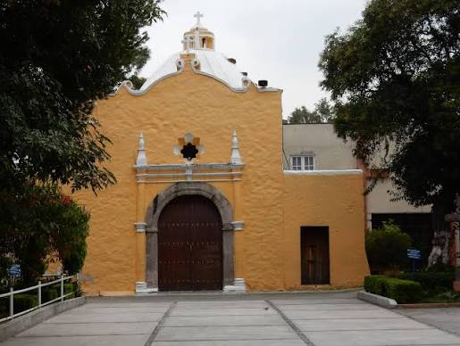

Santa Ursula Xitla
Por: Tomado de Internet
Por: Tomado de Internet

Santa Úrsula Xitla es un pueblo prehispánico de origen Tepaneca. Los Tepanecas, "gentilicio que se le da a esta tribu autóctona de México", eran de origen Chichimeca, tenían como lengua madre el Náhuatl y se asentaron en la cuenca valle de México. Cuando los Tepanecas llegaron a estos lugares del valle de México entre los siglos xi y xii D.C. los Xochimilcas, Chalcas y Texcocanos ya se encontraban asentados en la región. Eran pueblos que vivían de la agricultura, pesca y caza, con gran poder militar, ya que cobraban tributo. Los Tepanecas también eran conocidos por su poderío militar, habitaron desde Azcapotzalco, Coyoacán, Tlalpan y Ajusco, pero las constantes guerras que se vivían entre los Tepanecas y los xochimilcas obligaron al pueblo Tepanecas a tener mayor presencia en la parte donde actualmente se encuentra la Alcaldía Tlalpan. Ya que al perder algunas batallas quedaron bajo órdenes de los Xochimilcas, y eran obligados a rendir tributo. Cuando los Tepanecas se liberaron, vieron la necesidad de poner varios asentamientos, entre ellos el nuestro, el Pueblo de Tochico, que en náhuatl significa “Lugar de Gargantillas Finas” (Tozxiuhco ~ Toz-xiuh-co ~ Toxico. De Toxcatl, garganta, gargantilla, y xihuitl, cosa preciosa: Toz-xiuh-co, "Gargantilla fina o de valor"), mismo que aparece en el Códice de Mendoza y en diversos mapas de la historia. Con el paso del tiempo y debido a las cercanías del volcán Xitle se le denomina el Pueblo de Xitla, que en Náhuatl significa Ombligo. Tochico también tiene una segunda traducción que se dice haciendo referencia a uno de los parajes originarios del Pueblo: Tochihuitl que significa “Lugar de los Conejos” El Pueblo de Tochico, según consta en el Archivo General de Nación tiene presencia desde el siglo xiii. Pero es hasta la conquista que tiene mayor relevancia, tomado por los españoles en 1521.